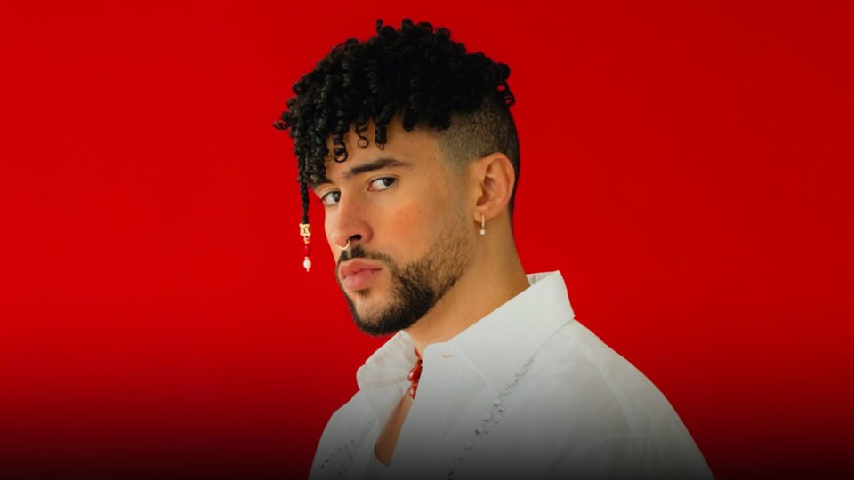
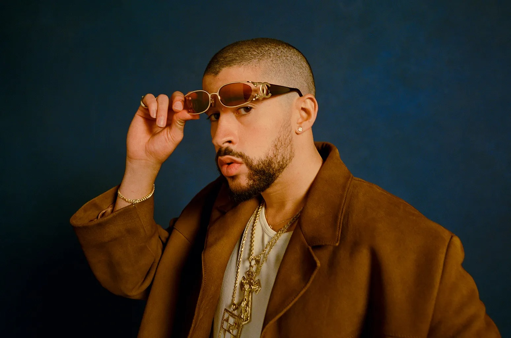

Bienvenidos al blog donde hablaremos sobre Bad bunny
En este blog se hablará acerca del artista latino con más oyentes en Spotify, su carrera, sus logros y acerca del impacto en nuestro dia a dia.
 ¿Quién es Bad Bunny?
Bad Bunny, cuyo nombre real es Benito Antonio Martínez Ocasio, es un cantante, compositor y productor musical puertorriqueño. Nació el 10 de marzo de 1994 en Vega Baja, Puerto Rico. Es uno de los artistas más influyentes y populares del género urbano, especialmente en reguetón, trap y música latina.
Ultimos temas
¿ Porqué bad bunny se ha convertido en un artista tan grande?
Su estilo único, que mezcla reguetón, trap, rap y otros géneros urbanos, ha sido pionero y lo ha mantenido en la vanguardia de la música latina. Su capacidad para experimentar con diferentes sonidos y fusiones le ha permitido conquistar a una audiencia global.